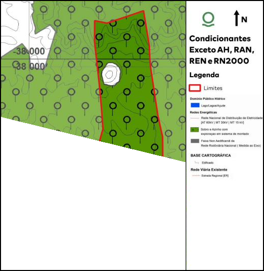
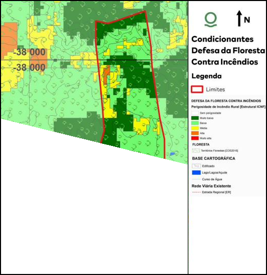
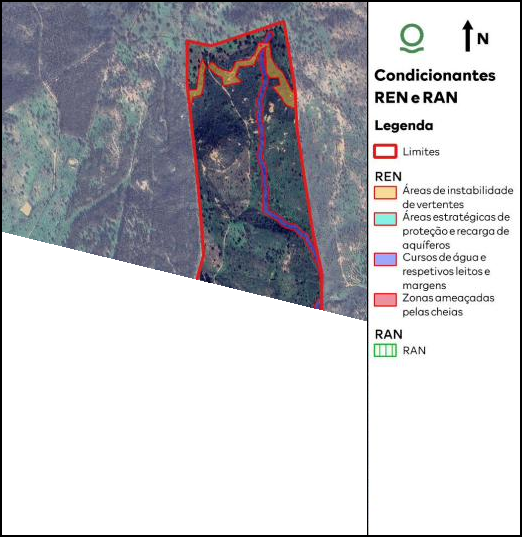
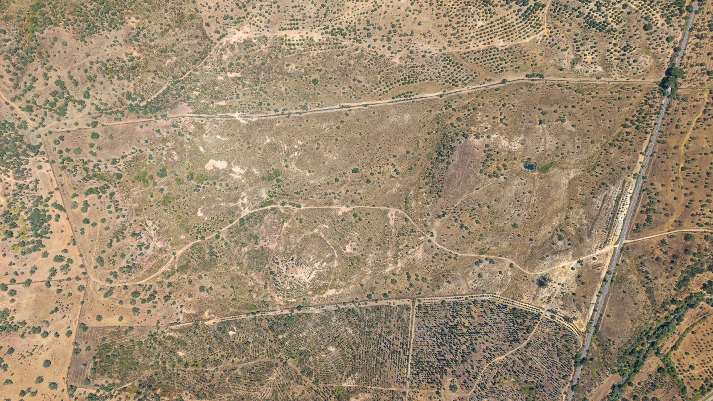
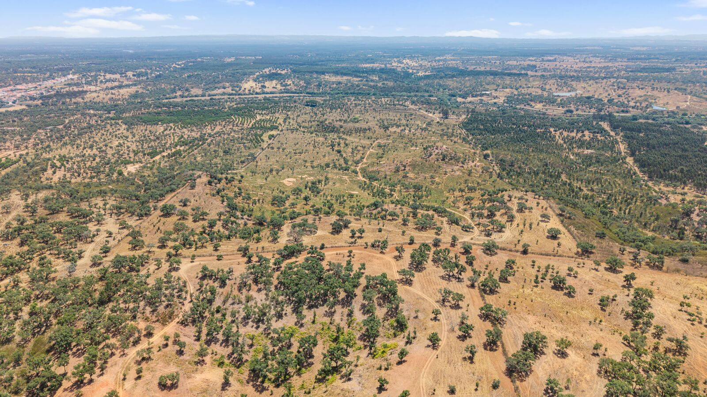
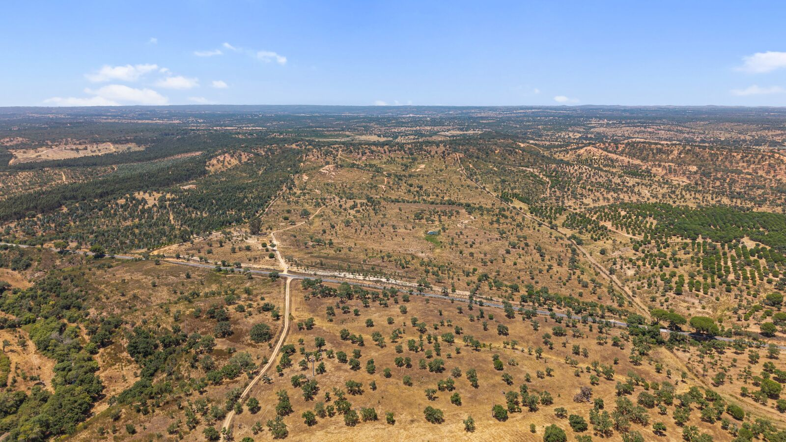

ALENTEJO COAST · PORTUGAL
Monte do Pego Estate
Investment Memorandum — Rural Estate & Hospitality Development Opportunity
50.05 haREGISTERED LAND AREA
São DomingosSANTIAGO DO CACÉM
POAPRICE ON APPLICATION
July 2026PREPARED
IMPORTANT NOTICE
Disclaimer
This Investment Memorandum has been prepared to provide prospective investors with a preliminary overview of Monte do Pego Estate, located in São Domingos, Santiago do Cacém, Portugal, for information purposes only.
This Memorandum does not constitute an offer, invitation, or recommendation to buy or sell any asset, nor does it constitute legal, tax, financial, or investment advice. The information contained herein has been compiled from public registry records, municipal correspondence, and information provided by the owner, and is believed to be accurate as of the date of preparation. However, no representation or warranty, express or implied, is made as to its completeness or accuracy.
Prospective investors should conduct their own independent due diligence, including legal, tax, planning, and technical verification, and should seek independent professional advice from Portuguese-qualified lawyers, notaries, and licensed real estate and tax advisors before making any investment decision. Areas, boundaries, and planning parameters referenced in this Memorandum should be confirmed against updated registry (Conservatória do Registo Predial), tax office (Autoridade Tributária), and municipal (Câmara Municipal de Santiago do Cacém) records prior to any transaction.
All figures are stated in Euros (€) unless otherwise indicated. This document is strictly private and confidential and is intended solely for the use of the person to whom it has been provided.
Contents
- 01Executive Summary
- 02The Property & Legal Status
- 03Planning & Development Potential
- 04Location & Accessibility
- 05Market Context
- 06Agricultural & Income Profile
- 07Investment Considerations & Risks
- 08The Estate in Images
- 09Transaction & Contact
01 — EXECUTIVE SUMMARY
A Rare Rural Estate on Portugal's Most Sought-After Coastline
Monte do Pego Estate is a 50.05-hectare rural landholding in São Domingos, Santiago do Cacém — set back from the Atlantic within the Alentejo Coast, the stretch of Portugal that has, over the past five years, become the country's leading destination for discreet, land-rich, nature-oriented luxury tourism. The estate sits approximately 30 minutes from the Atlantic beaches, 50 minutes from Comporta, and 90 minutes from Lisbon Airport — close enough to the region's international spotlight to benefit from it, far enough inland to remain private, expansive, and undeveloped.
The estate is registered as an independent property following a certidão de divisão de facto issued by the Câmara Municipal de Santiago do Cacém in May 2026, which formally recognised the physical separation created by the EN261 national road from the remainder of the original larger "Pego" property. Monte do Pego Estate is a self-contained, cork-oak covered landholding with direct frontage onto the EN261.
The estate combines a productive cork oak "montado" with meaningful, though not yet formally licensed, development potential under the Santiago do Cacém Municipal Master Plan (PDM), which permits rural tourism uses on this land subject to completion of the formal licensing process. Scale, setting, and proximity to the fastest-growing luxury coastal market in Portugal make this a distinctive proposition for investors seeking a long-term rural or hospitality-oriented asset on the Alentejo Coast.
50.05 ha
REGISTERED LAND AREA
30 min
TO THE ATLANTIC COAST
Investment Highlights
- Freehold rural estate of 50.05 ha, legally recognised as an independent parcel following the May 2026 certidão de divisão de facto.
- Positioned inside one of Europe's fastest-growing luxury coastal tourism regions, minutes from Comporta, Melides, and the Tróia peninsula — the Alentejo was Portugal's fastest-growing region for tourism overnight stays in 2025 (+6.3% year-on-year per INE).
- Existing cork oak ("montado de sobro") forest, a recognised long-term agricultural asset in the Alentejo, with related eligibility for EU agricultural (CAP) support.
- Rural tourism development potential confirmed in principle by the Santiago do Cacém Municipal Council, subject to completion of the formal licensing process (see Section 03).
- Direct frontage onto the EN261 regional road, with good accessibility to Santiago do Cacém, Sines, and the wider Alentejo Litoral.
02 — THE PROPERTY & LEGAL STATUS
Registry & Cadastral Position
Monte do Pego Estate is registered at the Conservatória do Registo Predial de Santiago do Cacém under description number 410 (23/03/1990), in the freguesia of São Domingos. It was recognised as an independent property under Certidão nº 172/2026, issued by the Câmara Municipal de Santiago do Cacém, following the physical division of the original larger "Pego" property by the EN261 national road.
| ITEM | DETAIL |
|---|
| Property name | Monte do Pego Estate |
| Location | São Domingos, Santiago do Cacém, Setúbal District |
| Registry description | Conservatória do Registo Predial de Santiago do Cacém, nº 410/19900323 |
| Registered area | 500,500 m² = 50.05 ha, per Certidão nº 172/2026 (7 May 2026) |
| Legal basis | Certidão de divisão de facto nº 172/2026, Câmara Municipal de Santiago do Cacém, recognising the EN261 as the physical boundary separating this property from the remainder of the original estate |
| Land use classification | Cork oak montado (Montado de Sobro), arable culture (Cultura Arvense), and olive groves, per the Caderneta Predial Rústica |
| Existing buildings | None on this estate — the pre-existing dwelling sits on the adjoining portion of the original property, not included in this offering |
| Ownership | Full freehold ownership (propriedade plena), currently held by a single titular |
Confrontations: North — Corte, Cerca do Pego, Manuel Pereira, Manuel Joaquim e Joaquim Brissos; South — EN261; East — Vale da Canha e Arneirinho; West — Vale Chiqueiros e Joaquim Brissos.
03 — PLANNING & DEVELOPMENT POTENTIAL
A Framework Confirmed, Formal PIP Underway
In February 2025, the Câmara Municipal de Santiago do Cacém issued a "Informação Prévia Simples" — a preliminary, non-binding technical opinion — in response to a request concerning the maximum buildable potential of the original "Pego" estate under the Municipal Master Plan (Plano Diretor Municipal, PDM). This is an important preliminary step, but it is not a granted building permit, an approved subdivision (loteamento) for construction purposes, or a formally binding Prior Information Request (PIP) decision.
The PDM parameters are proportional to plot area, and Monte do Pego Estate's own registered area (500,500 m²) already exceeds the thresholds at which the relevant caps apply. Applied to this 50.05 ha parcel on a standalone basis, the applicable parameters are:
| USE | PDM BASIS | MAX. BUILDABLE AREA |
|---|
| Rural Tourism — Casas de Campo / Agroturismo | Art. 35º PDM (10% of area, capped) | 4,000 m² gross construction |
| Rural Hotel (Hotel Rural) | Art. 35º PDM (15% of area, capped) | 6,000 m² gross construction |
| Agricultural outbuildings | Art. 32º PDM (1% of area) | Up to 5,005 m² |
| Maximum impermeabilisation (tourism) | Art. 35º PDM (20% of area) | Up to 100,100 m² |
Because the Hotel Rural and Rural Tourism percentages are calculated directly on Monte do Pego Estate's own 50.05 ha, the 6,000 m² and 4,000 m² ceilings above already reflect this parcel on a fully standalone basis.
Planning conditions to note
- Next step. The owner intends to submit a formal Pedido de Informação Prévia (PIP) shortly, supported by the technical land study referenced below, for a specific architectural concept (boutique hotel, wellness retreat, or nature resort). This will convert the current preliminary framework into a binding planning decision.
- The land is classified as rústico (rural) and includes areas within Reserva Agrícola Nacional (RAN) and Reserva Ecológica Nacional (REN). A comprehensive technical land study — prepared by Agroges, including detailed cartography, soil classification, fire-hazard mapping, and topographic surveys — has been carried out and is available to prospective investors on request, and will support the formal licensing submission. All buildable-area figures above should be read together with that study's constraints.
- The EN261 forms the southern boundary of the parcel. Boundary and servitude details (including any nearby medium-voltage electricity infrastructure) are documented in the Agroges technical study.



04 — LOCATION & ACCESSIBILITY
The Alentejo Coast, Portugal's Emerging Luxury Destination
São Domingos sits inland from Portugal's Alentejo Coast, within the municipality of Santiago do Cacém, one of the country's fastest-growing luxury tourism regions — home to Comporta, Melides, and the wider Costa Vicentina. The estate combines rural privacy with practical access to the coast, regional towns, and two international airports.
| DESTINATION | APPROX. TRAVEL TIME |
|---|
| Santiago do Cacém | 15 min |
| Sines | 25 min |
| Atlantic Coast beaches | 30 min |
| Melides | 35 min |
| Comporta | 50 min |
| Beja Airport | 55 min |
| Lisbon Airport | 90 min |
| Faro Airport | 90 min |
Travel times are indicative estimates by car and should be verified for a specific planning exercise.
05 — MARKET CONTEXT
A Region on a Confirmed Growth Trajectory
Independent tourism statistics and market research support the underlying thesis for a rural/nature hospitality development on the Alentejo Coast — a region that has, in the space of a decade, moved from a quiet agricultural hinterland to Portugal's most talked-about frontier for high-end, low-density tourism.
82.1M
NATIONAL OVERNIGHT STAYS, 2025
+6.3%
ALENTEJO GROWTH, FASTEST IN PORTUGAL
+600%
RURAL TOURISM (TER) GROWTH, 1990–2019
National & regional tourism demand
Portugal's tourism sector reached historic highs in 2025, with 82.1 million overnight stays nationally (+2.2%) and 32.5 million guests (+3.0%), according to INE preliminary data. The Alentejo was the fastest-growing region in the country, posting the largest annual increase in overnight stays of any region (+6.3%) — accelerating to +7% in the fourth quarter of 2025 — ahead of the Setúbal Peninsula (+4.7%) and the North (+4.5%). Non-resident overnight stays in the Alentejo rose even faster in several recent months, including a +7.2% increase in December 2025 and +6.9% in August 2025.
Rural tourism & agrotourism
Turismo de Portugal and INE data show that Turismo em Espaço Rural (TER) establishments grew by more than 600% between 1990 and 2019, with related overnight stays rising from roughly 61,000 to close to 2 million over the same period. Agrotourism has been one of the fastest-growing sub-segments, expanding from around 5% of TER supply in 1989 to approximately 17% today. The Alentejo is the second-largest demand region for agrotourism in Portugal (c. 24.8% of demand), behind only the North.
Coastal Alentejo hospitality & real estate
Industry advisers (including Athena Advisers and Engel & Völkers) describe Comporta and Melides, a short drive from the estate, as having overtaken the Algarve as Portugal's leading prime coastal destination, with average asking prices up by roughly 20% over five years and continued international demand from UK and US buyers.
"Torre Vã, a rural herdade in Ourique converted into a five-star rural hotel, illustrates the market appetite for exactly this kind of estate-to-hospitality conversion in the wider Alentejo — alongside a hospitality pipeline that remains active into 2026–2027, including Quinta Amala in Melides, Sublime Comporta Villas, and NUMA Comporta."
Industry coverage, Athena Advisers / Engel & Völkers / Ardina do Alentejo (2025–2026)
Sources: Instituto Nacional de Estatística (INE), Estatísticas do Turismo 2025 and monthly Atividade Turística releases; Turismo de Portugal / TravelBI, Turismo no Espaço Rural e de Habitação; Athena Advisers and Engel & Völkers market commentary (2025–2026); Ardina do Alentejo, regional hospitality pipeline coverage (May 2026). Figures are third-party estimates provided for general market context and should be independently verified.
06 — AGRICULTURAL & INCOME PROFILE
A Working Cork Oak Estate
The Caderneta Predial Rústica confirms that Monte do Pego Estate is predominantly covered by "Montado de Sobro ou Sobreiral" (cork oak montado), complemented by areas of arable culture (Cultura Arvense) and scattered olive trees (Oliveiras). Cork remains one of the Alentejo's principal agricultural exports, and mature montado land of this kind is typically eligible for the EU Common Agricultural Policy's area-based direct payment schemes, in addition to any income generated from periodic cork stripping.
Note: the fiscal "rendimento" figures shown on the Caderneta Predial Rústica reflect notional tax-assessment values used to calculate the IMI property tax base, not actual market cork revenue or subsidy income. Prospective investors should request the owner's recent cork-harvest and CAP subsidy records, where available, to assess actual recurring income.
07 — INVESTMENT CONSIDERATIONS & RISKS
Key Points for Due Diligence
A comprehensive technical land study (cartography, soil classification, fire-hazard mapping, and topographic survey), prepared by Agroges, is available to prospective investors on request and can be shared as part of the due diligence process.
- Planning timeline: the current development framework rests on a preliminary municipal opinion. A formal Pedido de Informação Prévia (PIP) is expected to be submitted shortly, supported by the Agroges technical study, which will provide a binding planning decision; usual municipal review timelines and outcome should be confirmed with the appointed planning consultant.
- Title verification: an updated Certidão Permanente should be obtained immediately prior to signing to confirm current ownership and the status of the historical charges referenced in Section 02.
- Cross-border considerations: foreign investors should take independent Portuguese legal and tax advice regarding acquisition structure (personal vs. corporate vehicle), tax residency implications, and any applicable AIMI/IMI property taxation.
08 — THE ESTATE IN IMAGES
Monte do Pego Estate






09 — TRANSACTION & CONTACT
Investment Enquiries
Monte do Pego Estate (50.05 ha) is offered freehold, Price on Application. Interested parties are invited to contact the owner directly for further planning documentation, the Agroges technical land study, an updated registry certificate, and to arrange a site visit.
This Memorandum is strictly private and confidential and is provided solely for the internal evaluation purposes of the recipient. It may not be reproduced or distributed, in whole or in part, without prior written consent.